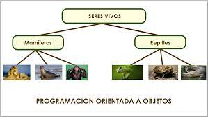
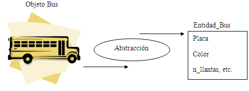

¿Qué es la Programación Orientada a Objetos?
La programación orientada a objetos (POO) es un paradigma de programación que parte del
concepto de "objetos" como base, los cuales contienen información en forma de campos
(a veces también referidos como atributos, cualidades o propiedades) y código en forma de métodos.
Los objetos son capaces de interactuar y modificar los valores contenidos en sus campos o
atributos (estado) a través de sus métodos (comportamiento).
Muchos de los objetos prediseñados de los lenguajes de programación actuales permiten
la agrupación en bibliotecas o librerías, sin embargo, muchos de estos lenguajes
permiten al usuario la creación de sus propias bibliotecas.
Algunas características clave de la programación orientada a objetos son herencia,
cohesión, abstracción, polimorfismo, acoplamiento y encapsulamiento.
Su uso se popularizó a principios de la década de 1990. En la actualidad, existe una gran
variedad de lenguajes de programación que soportan la orientación a objetos, estando la
mayoría de éstos basados en el concepto de clases e instancias.

Características
Polimorfismo
Abstracción
Encapsulamiento